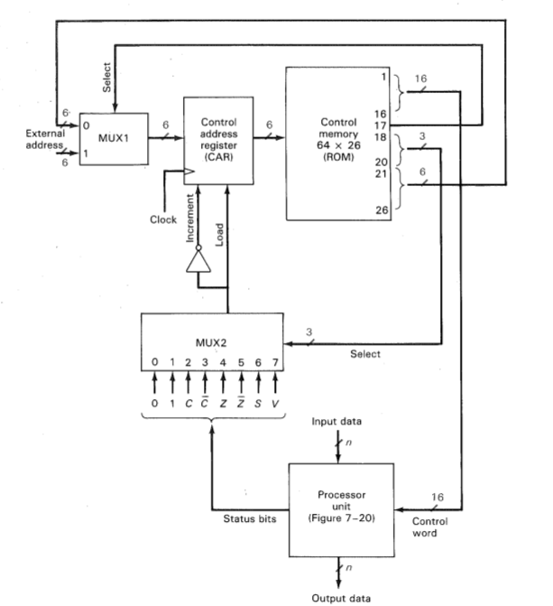

Bu dönem aldığım Mikroişlemciler dersinde Morris Mano'nun bilgisayar mimarileri üzerine yazdığı kitabı kullanmaktayız. Bu kitabın diğer birçok mikroişlemciler kitabından en büyük farkı, herhangi bir işlemci mimarisine bağımlı olmadan tamamen hayali bir işlemci mimarisi üzerinden anlatıyor olmasıdır. Bu şekilde bir anlatım tarzı olduğundan anlaması da bir hayli kolay oluyor. Çok basit, az özellikli ama işlemcileri anlamak için yeterli bir olanak sunuyor.
İşte bu sanal işlemci mimarisi üzerine düşünürken kimi zaman çeşitli algoritmalar yazıyorum ve bunların nasıl çalıştığını teker teker gözlemek gerekiyor. Bu sırada aklıma bunları simule edebileceğim bir ortam yazmak geldi. Yazının konusunu da bu işlemci için yazılan kodları simule edebileceğimiz bir ortamı nasıl yazabileceğimiz oluşturuyor. Anlaşılır olması için aynı kitapta olduğu gibi kodları da o tarz bloklara böldüm. Komut seti zaten tamamen aynısı.

Genel mimari
Sanal makinemiz çalışırken 16 bitlik control word'leri işleyerek çalışıyor. Bu 16 bit te A, B, D, F, H adında 5 ayrı alandan oluşuyor. A, B ve D kısımları 3 bitlik bilgi tutmaktadır. Buradaki 3 bitlik veri ile hangi kaydedici olduğu bilgisini tutacağız. Yani 8 tane kaydedicimiz olacak. A ve B isimleri işlemcinin içerisinde yer alan ve işlemci ünitesine gidecek olan yolları ifade etmektedir. D'de adından anlaşılacağı gibi destination yani hedef kaydediciyi tutacak. Özetlersek A kaydedicisi içerisinde veri ile B kaydedicisi içerisindeki veriyi işleme sokup D kaydedicisi içerisindeki kaydediciye yazacağız.
16 bitlik kelimemizde F kısmı 4 bitlik veri tutmaktadır ve hangi işlemin gerçekleşeceğini belirtecektir. Yani toplam 16 farklı işlem yaptırabiliriz. Bu işlemlere örnek verirsek 0001 Increment A işlemini ifade etmektedir ve A registerının içeriğini bir arttır ve D registerının içeriğine yazar. Bu şekilde aritmetik ve mantık işlemlerinin her birinin ayrı bir 4 bitlik ifadesi vardır.
Kelimemizdeki son kısım H 3 bitliktir ve kaydırma işlemleri bilgisini tutacaktır. Örneğin 000 No Shift anlamına gelmektedir.
Bu kısımda anlattığım 16 bitlik control word yapısını aşağıdaki şekilde oluşturdum.
typedef struct{
unsigned short A:3;
unsigned short B:3;
unsigned short D:3;
unsigned short F:4;
unsigned short H:3;
}_control_word;
Aritmetik ve mantık işlemleri sonucunda çeşitli bayrakların kaldırılmasına ihtiyacımız vardır. Bunları da tutmak için aşağıdaki gibi bir yapı oluşturdum.
typedef struct{
unsigned char Z:1;
unsigned char S:1;
unsigned char C:1;
unsigned char V:1;
unsigned char R:1;
}_flags;
Yukarıda verdiğim iki yapıda da bit field kullandığımı fark etmişinizdir. Yanlarında yazan sayılar kaç bitlik veri tuttuğunu göstermektedir.
16 bitlik kelimemizin yanında seçme işlemi yapan ayrı bir select unit bulunmaktadır. Onun kodlarını ilerleyen aşamada vereceğim ancak şimdilik onun kullanacağı yapıyı tanımlayalım. MUX1 ile Internal mı yoksa External adrese mi gidileceğini belirtiyoruz. MUX2'de üst seviyeli dillerden bildiğimiz if yapısını oluşturmak için gerekli. Yani zero bayrağı kalktıysa şu adrese git diyebilmemizi MUX2'ye vereceğimiz 3 bitlik veri ile belirliyoruz. Son olarakta gideceğimiz adresi 8 bitlik olarak veriyoruz. Kitapta normalde 6 bitlik adres kullanıyor ancak 8 bitlik kullanmanın bir sakıncası yok hatta daha doğru diye düşünüyorum.
typedef struct{
unsigned short MUX1:1;
unsigned short MUX2:3;
unsigned short ADDRESS:8;
}_select;
Tüm bu yapılardan sonra işlemcinin anladığı instruction 28 bitten oluşur. A, B, C, D, F, H'den 16 bit, MUX1, MUX2 ve ADRESS'den de 8 bit gelince toplam 28 bit olur. Özetle işlemcimize 28 bitlik emirler verdiğimizde o bunları işleyecek ve davranışını belirleyecek.
typedef struct{
_control_word* current_word;
_flags* flags;
_select* select;
short* registers;
unsigned int reg_num;
unsigned int* car;
unsigned int car_counter;
}virtual_machine;
Son olarakta sanal makine yapımızı oluşturuyoruz. Burada current_word, flags ve select ile yukarıda kurduğumuz yapılara işaret eden işaretçilerimizi tanımlıyoruz. Bu 3 yapının toplam 28 bitten oluştuğunu da belirtmiştim zaten.
registers ile işlemcimizde kullanacağımız kaydedicileri tutacağız. Tipini short yaptığım için bir kaydedici içinde 16 bitlik veri tutabiliriz. reg_num ilerde kaydedici sayısı artarsa diye koyduğum bir değişken. İşleyişte çok önemli bir yere sahip değil.
En son kısımda yer alan car isimli işaretçiye sanal makinemizin çalıştırmasını isteceğimiz emirleri yazacağız. unsigned int yapma sebebim bize en azından 28 bitlik verinin yetmesidir. Düz hesap 32 bite yuvarladım yani. car_counter'da işlemcinin o an hangi emiri çalıştırdığı verisini tutacak. Yani bellekteki konumu tutacak. Buranın tipini değiştirerek ne kadar emir yazabileceğimizi belirleyebilirsiniz.
ALU
İşlemcideki bu kısım kod içerisinde process dosyaları altında duruyor. Burada yapılan işlem gayet basit. Emir decode edilip A, B, C, D, F bloklarına ayrıldıktan sonra uygulu koda göre işlemi uyguluyor. Mesela F bloğu 0 ise TSF isimli emir çalışacak. Bu da A kaydedicisi içerisindeki veriyi D kaydedicisi içerisine koyuyor. vm->registers bildiğiniz gibi tüm kaydedicilerimizi tutuyor. vm->current_word->D kısmı da D kaydedicisinin numarasını tutuyor. Yani bu değer 3 ise R3 kaydedicisinin içerisine verimiz gidecek anlamı taşır.
void process(virtual_machine* vm){
short first_result;
short last_result;
unsigned int tmp;
switch(vm->current_word->F){
case 0:
/* TSF */
vm->registers[vm->current_word->D] = vm->registers[vm->current_word->A]; // transfer A to D
break;
....
Bu birimde dikkat etmemiz gereken nokta bazı işlemlerden sonra bayrakların etkilenmesidir. Hangi işlemden sonra hangi bayrağın etkileneceği kitapta ayrıntılı belirtilmiştir. process fonksiyonu altında kullandığım first_result, last_result ve tmp isimli değişkenler bayrakların kaldırılması sırasında yardımcı olmaktadır. Mesela iki short tipinde veriyi topladığımızda taşma olup olmadığını anlamak için toplamı int tipinde tutuyorum ve eğer short tipinde toplama yapıldığında ortaya çıkan sonuca eşit değilse overflow bayrağını kaldırıyorum.
void zero_sign_control(short first_r, short last_r, _flags* current){
if(first_r >> 15) current->S = 1; // S = 1
else current->S = 0;
if(!first_r) current->Z = 1; // Z = 1
else current->Z = 0;
}
Kaydırıcı
İşlemcinin bu kısmı emirin H bloğu ile ilgilenir. İşlemci çalışması sırasında buraya ALU kısmında işini bitirdikten sonra gelmektedir. Sonuçlar üzerinde kaydırma işlemleri burada yapılmaktadır.
void shifter(virtual_machine* vm){
unsigned char current, temp;
switch(vm->current_word->H){
case 0x0:
/* NSH */
break;
case 0x1:
/* SHL */
current = vm->registers[vm->current_word->D];
temp = current << 1; // shift left with input 0
vm->registers[vm->current_word->D] = temp;
break;
...
Aynı ALU'da olduğu gibi burada da gelen bloğun değerine göre ilgili case çalışmaktadır. Mesela eğer H bloğu değeri 1 ise SHL komutu çalışacaktır. Yani D kaydedicisi içerisindeki veri 1 bit sola kaydırılacaktır. Yukarıdaki kod da current ve temp isimli iki değişken olduğunu göreceksiniz. Bunların SHL sırasında işe yaramadığını düşünebilirsiniz ancak bütünlüğü bozmamak için böyle kullandım. Biraz da ilk yazdığım koddan kaldığı için böyleler. Yakın zamanda gereksiz kısımları atabilirim.
Seçici
Bu kısımda da emirimizin MUX1, MUX2 ve ADDRESS bloğuyla ilgileniriz. Yani bir sonraki çalıştırılcak emirin ne olacağına burası karar verir. MUX2 içerisindeki veri bize nasıl bir zıplama yapılcağını belirtir. ADDRESS zaten bildiğimiz gibi eğer bir zıplama yapılacaksa bunun neresi olduğunu tutacak.
void selector(virtual_machine* vm){
switch(vm->select->MUX2){
case 0:
/* NEXT */
vm->car_counter += 1;
break;
case 1:
/* LAD */
vm->car_counter = vm->select->ADDRESS;
break;
case 2:
/* LC */
if(vm->flags->C) vm->car_counter = vm->select->ADDRESS;
else vm->car_counter += 1;
break;
...
Mesela eğer MUX2 içeriği 0 ise car içerisinde yer alan bir sonraki emirin koşması için car_counter 1 arttırılıyor. Eğer 1 ise de doğrudan bir adrese gitme işlemi gerçekleşiyor. ADDRESS bloğu içerisindeki veri car_counter içerisinde alınıyor ve bir sonraki çalışacak olan emir bu adresten geliyor. Bu zıplamalar sırasında koşul çok önemlidir. Mesela LC eğer Z yani ZERO bayrağı kalktıysa ADDRESS içerisine git demek oluyor.
Makinenin çalışması
Buraya kadar işlemcinin kitapta anlatıldığı gibi yapısını nasıl kurduğumdan bahsettim. Şimdi de bu makinenin nasıl ve hangi sırayla çalışacağından bahsedeyim. machine_init fonksiyonu ile bellekten dinamik olarak yer tahsisi yapıp bayraklarımızı temizliyoruz ve çalışmaya hazır duruma getiriyoruz.
void execute(virtual_machine* vm, unsigned char flag){
while(vm->flags->R){
decode(vm, vm->car[vm->car_counter]);
process(vm);
shifter(vm);
selector(vm);
if(flag) debugger(vm);
}
}
Burada yer alan execute fonksiyonu sanal makineyi çalıştıran ve emirleri işleten kısım. Burası da vm->flags->R olarak tanımlanan ve makinenin çalışıp çalışmadığı bilgisini tutan bayrağa göre işlem yapmaktadır. Eğer bu bayrak inmişse makine durur.
Makine çalıştığı sürecede vm->car_counter'ın gösterdiği yerden emir okunup decode edilir ve önce işlem birimine daha sonra kaydırma ve son olarakta seçme birimlerine gider. execute fonksiyonuna vereceğimiz değere göre de her adımda kaydedicilerin içerisindeki veriyi basabiliriz. Görüldüğü gibi eğer 0 verirsek ekrana hiçbir çıktı verilmeyecektır. Eğer zaten tek bir kaydedicinin içeriğini görmek istiyorsak bunun için printer isimli fonksiyonu kullanabiliriz.
void decode(virtual_machine* vm, unsigned int cw){
vm->select->MUX1 = (cw & 0x800) >> 11; // 0b0000000000000000100000000000
vm->select->MUX2 = (cw & 0x700) >> 8; // 0b0000000000000000011100000000
vm->select->ADDRESS = (cw & 0xFF); // 0b0000000000000000000011111111
cw >>= 12;
vm->current_word->A = (cw & 0xE000) >> 13; // 0b1110000000000000
vm->current_word->B = (cw & 0x1C00) >> 10; // 0b0001110000000000
vm->current_word->D = (cw & 0x380) >> 7; // 0b0000001110000000
vm->current_word->F = (cw & 0x78) >> 3; // 0b0000000001111000
vm->current_word->H = (cw & 0x7); // 0b0000000000000111
}
decode o an çalıştırılacak olan emirin binary formatını anlamlı kısıma çeviren fonksiyondur. Görüldüğü üzere emirin ikili tabandaki formuna uygun mask işlemleri ile verilerimizi çıkarabiliyoruz. Buradaki 16lık sayılar kafanızı karıştırmasın. Onlar yorum satırı olarak verdiğim ikili sayıların 16lık halleridir. Gelen emir parçalara ayrılıp maskelendikten sonra içindeki veriler en başta tanımladığımız yapıların içlerine yazılır. Haliyle artık emir çalıştırılmaya hazır duruma gelir.
Örnek algoritma
Buraya kadar işlemcinin yapısından tam olarak bahsetmek yerine sanal makineyi yazarken kullandığım yapılardan bahsettim. En azından kafanızda nasıl bir yapısı olduğu canlanmıştır. Yapabileceği tüm işlemler kitapta belirtiliyor zaten. Ayrıcana ben de yazmaya çalışıyorum. Tüm bunlardan yola çıkarak basit bir fibonacci hesaplayan kodu nasıl yazacağımızı göstermek istiyorum.
void another_fib_example(virtual_machine* my_vm){
my_vm->registers[1] = 6; // n + 1 = 6, n = 5
my_vm->registers[2] = 1; // fib(0) = 1
my_vm->registers[3] = 1; // fib(1) = 1
my_vm->registers[4] = 0; // fib(n)
my_vm->car[0x0] = LZ | 0x5; // if z == 1 goto: 5
my_vm->car[0x1] = RA2 | RD4 | TSF; // R4 <- R2
my_vm->car[0x2] = RA3 | RB2 | RD2 | ADD; // R2 <- R2 + R3
my_vm->car[0x3] = RA4 | RD3 | TSF; // R3 <- R4
my_vm->car[0x4] = RA1 | RD1 | DEC | LAD | 0x0; // R1 <- R1 - 1
my_vm->car[0x5] = HLT;
execute(my_vm, 0);
printer(my_vm, 4);
}
Bu kod da öncelikle kaydedicilerimizin içlerine değerlerimizi atadık. Normalde tam bir işlemcide bunun içinde ayrı bir emir gereklidir. Ben kitapta henüz bu kısmı görmediğim için ve kitaba sadık kalmak istediğimden bu emiri koymadım. Bu yüzden değerleri doğrudan atıyoruz şimdilik.
car isimli emir dizimizin 0 nolu adresine LZ | 0x5 yazdık. Bunun anlamı eğer Z bayrağı kalkmışssa 5 nolu adresteki emiri çalıştır demektir. Burada bir noktaya dikkat çekmek istiyorum. Kodları yazarken doğrudan bit düzeyinde or yapabilmemizdir. Bu şekilde bir yapıyı basit typedefler ile sağladım.
typedef enum { TSF = 0b0000 << 15, INC = 0b0001 << 15, ADD = 0b0010 << 15, SUB = 0b0101 << 15,
DEC = 0b0110 << 15, TRC = 0b0111 << 15, AND = 0b1000 << 15, OR = 0b1010 << 15,
XOR = 0b1100 << 15, COM = 0b1110 << 15, HLT = 0b1111 << 15} Operations;
İlgili işleve karşılık gelen değeri kontrol kelimesindeki konumuna gelecek kadar kaydırınca kodları yazarken gördüğünüz basit or işlemleri mümkün oldu.
Mesela car'ın 2 numaraları adresine yazdığımız emirin anlamı şu şekildedir. A yoluna R3 registerını koy, B yoluna R2 registerını koy ve bunlara ADD işlevini uygula. Oluşan sonucu da D yoluna koyduğumuz R2 registerına yaz. Herhangi bir kaydırma işlevi belirtmediğimiz içinde NSH çalışacaktır. Yani sonuç aynen bırakılacak.
Buradan da bahsettikten sonra 5 nolu satırdaki HLT emirinden de bahsetmek istiyorum. Kitapta normalde sanal bir ortamda olduğundan vişlemcinin nasıl duracağını bahsetmemiş. Ama bizim bir şekilde durdurmamız gerekiyordu. Ben R isiminde bir flag açarak bunu sağladım. Buradaki HLT emiri de bu bayrağı 0'a çekmektedir.
Yukarıda verdiğim kod içerisinde yer alan printer(my_vm, 4) ifadesi, ekrana sadece 4 nolu registerin içeriğini bas demektir. Tüm işlemler bittiğinde burada fibonacci sayısının değerini görmemiz gerekiyor.
Yukarıda gösterdiğim tüm kodlara, emirlere ve birkaç örneğe şuradan ulaşabilirsiniz. Ben bu yazım ile bir sanal makine nasıl olmalıdır sorusuna cevap vermeye çalışmadım. Sadece günümü kurtaracak basit bir kodu yazarken nasıl bir yol izlediğimi göstermek istedim. Kodun bazı kısımlarında hatalar olabilir. Eğer bunları görürseniz ve bana bildirirseniz çok sevinirim. Sadece hata değil her türlü önerilere de açığım.